Pembibitan & Budidaya Hidroponik
Proses persiapan *rockwool*, penyemaian benih sayuran di *tray*, hingga pertumbuhan bibit hijau di lahan hidroponik.


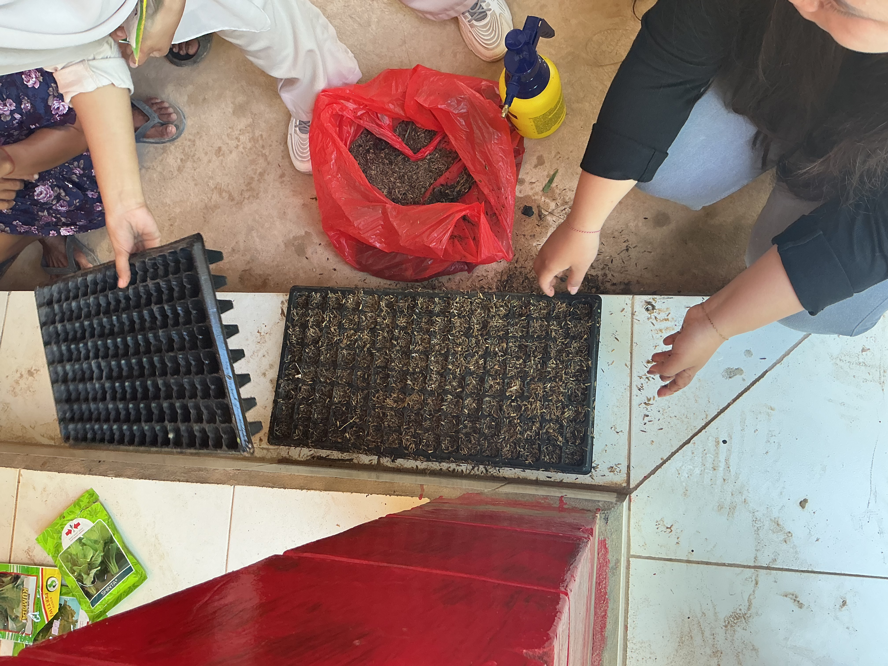
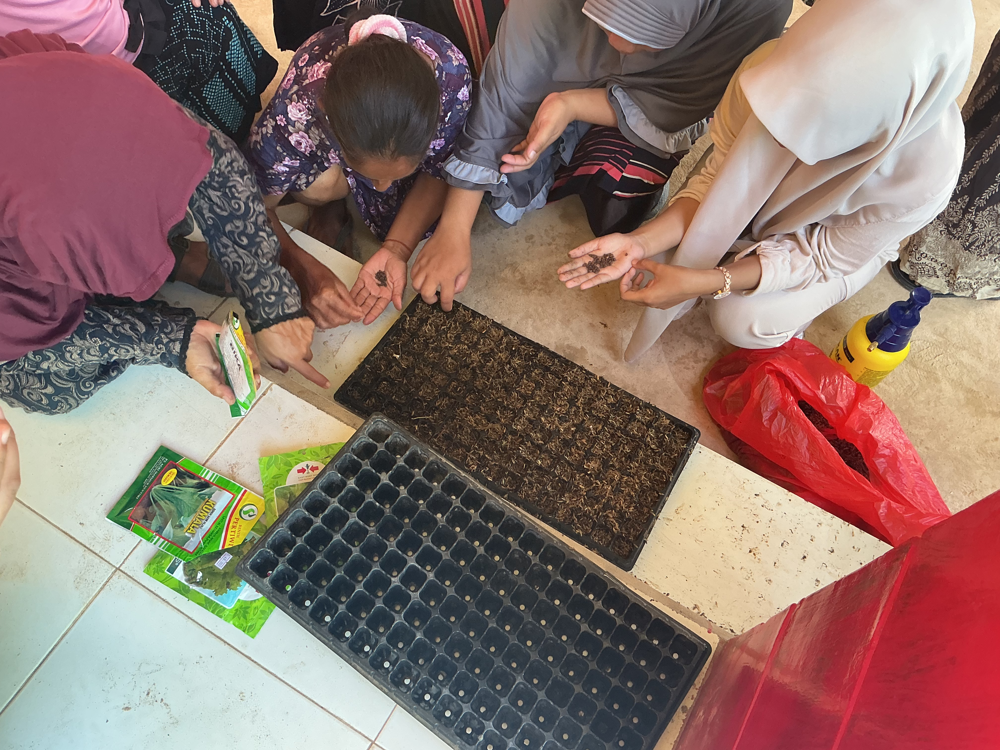
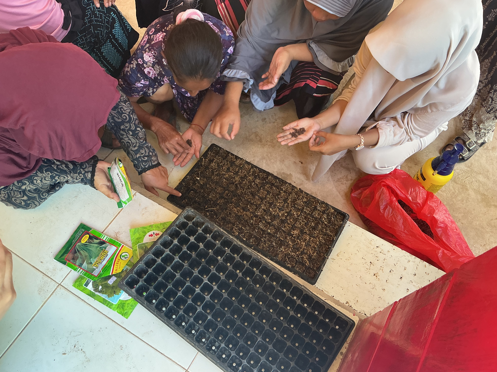

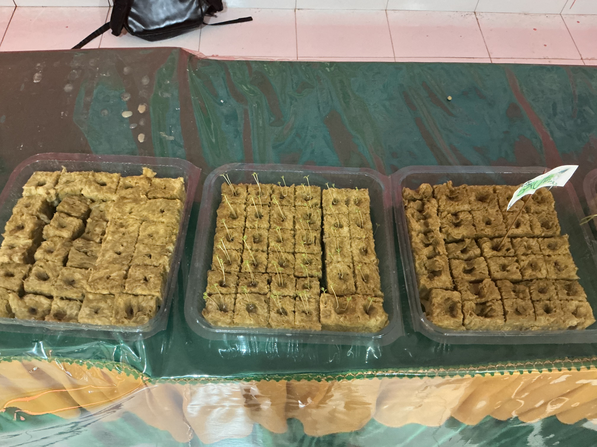

Survei Lapangan & Observasi Lanskap
Pengukuran teknis area di pesisir menggunakan meteran lapangan, serta eksplorasi bukit yang menghadap lautan.

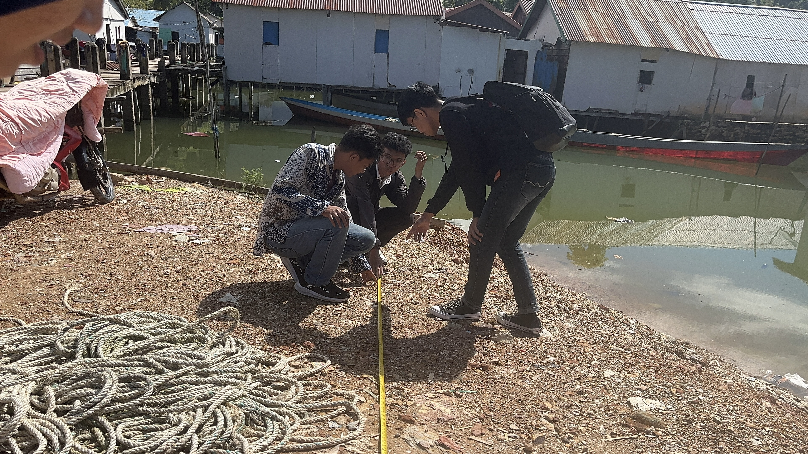
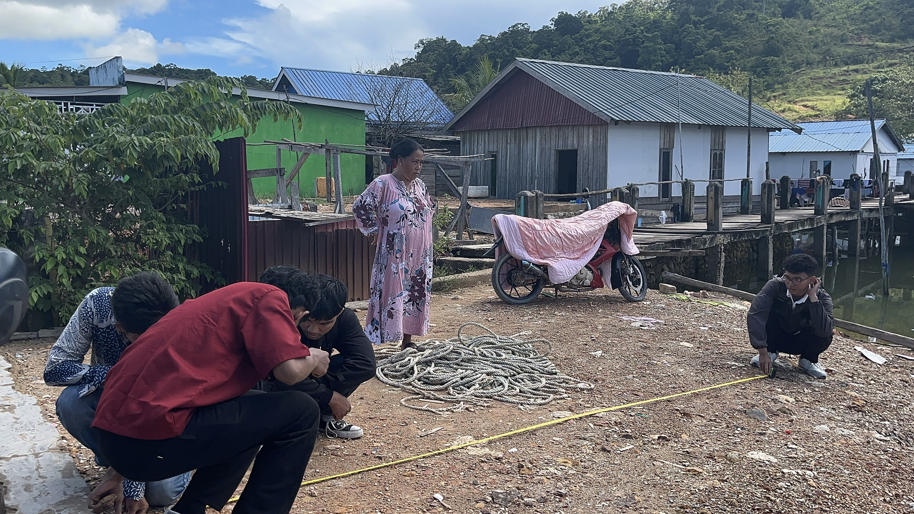


Sosialisasi Program Kerja
Pemaparan program kerja teknologi IoT dan AI hidroponik bersama perangkat desa dan warga di Balai Desa.
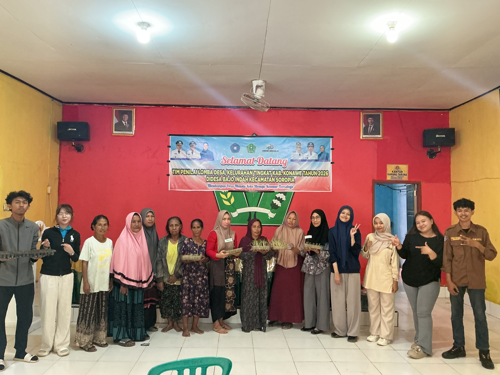
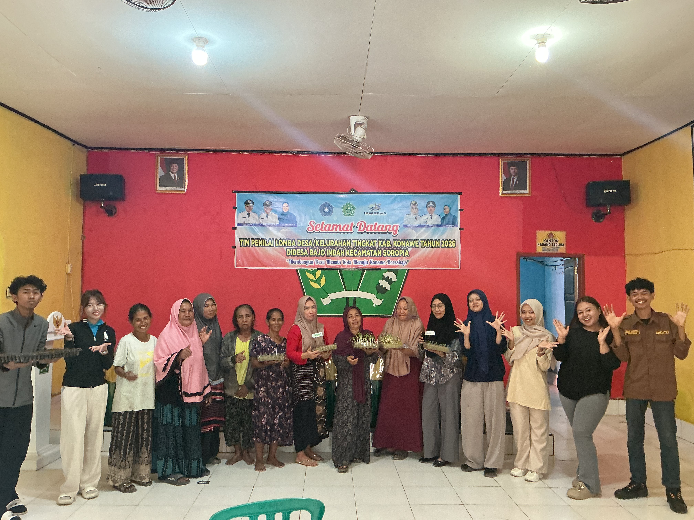
Pendekatan Sosial dengan Warga
Menjalin keakraban dengan berbincang santai di pinggir dermaga laut dan bermain bersama anak-anak desa.

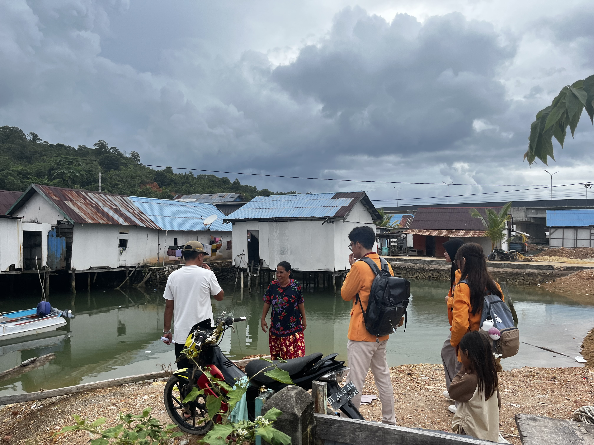
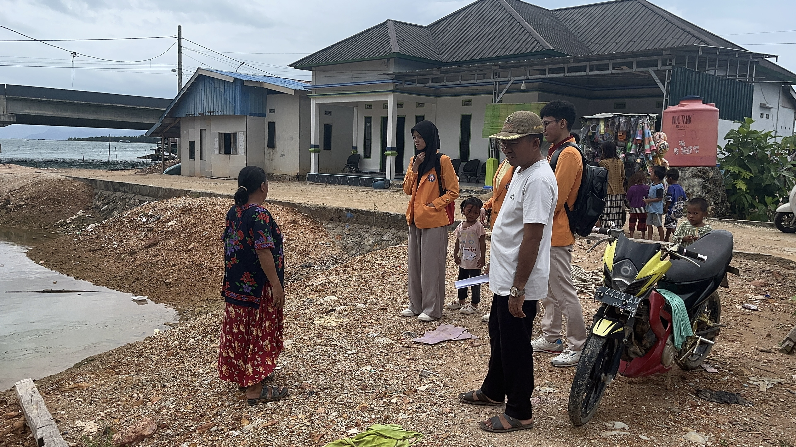
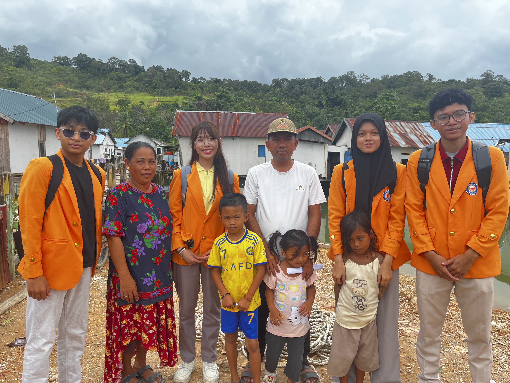
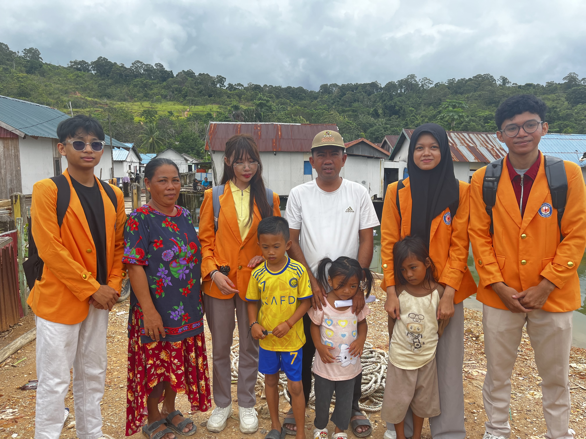
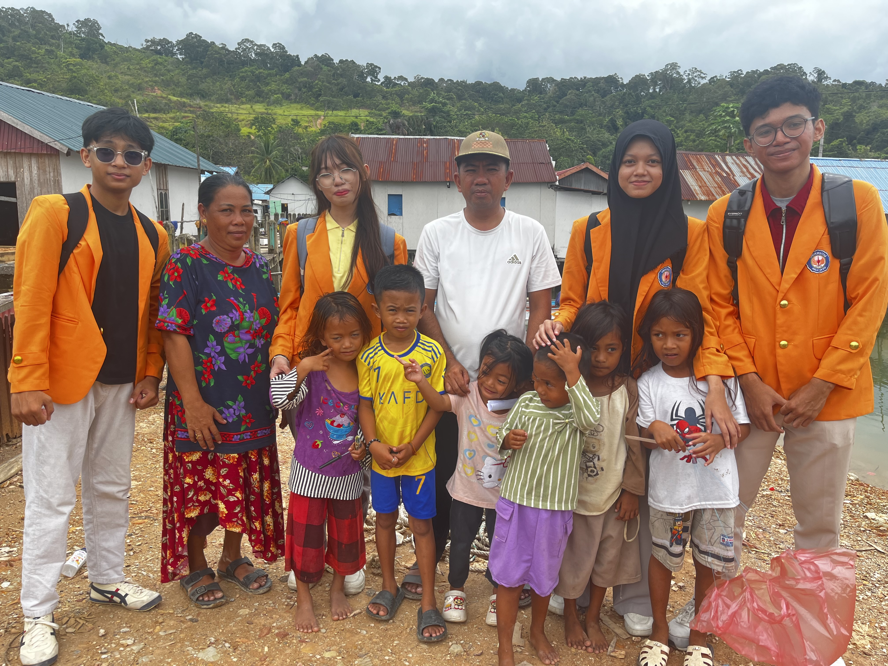